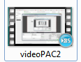
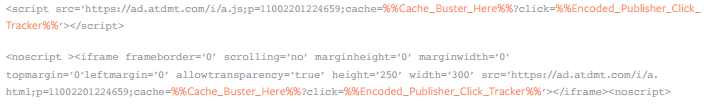

- Part I - Monetització de vídeos mitjançant anuncis
- Activitat 3.1
- Activitat 3.1.1
- Activitat 3.1.2
- Part II - Planificació de campanyes mitjançant un AD-server
- Activitat 3.2
Primer de tot tocarà descarregar la versió que ens penjen en l’aula de l’assignatura, doncs en altres versions que varem provar, podem veure com no existeix la carpeta que s’ens demana. Així doncs, amb un cop la versió que toca podem veure el fitxer index.html amb un editor i l’estructura creada per que funcioni. Podem observar que:
- Com es carreguen els diferents plugins per l’execució del video
- La variable apiAddress que realitza una cridada a vast.xml
Un cop dins de l’arxiu vast.xml podem veure el conjunt de variables que aquest empra per a realitzar les diferents funcions les quals analitzarem amb més profunditat en el següent punt. Al mateix temps, si executem el index.html podem veure com s’inicia el video sense cap tipus de publicitat, és a dir, no está funcionant doncs no tenim un web server funcionant.
Primerament ens dipossarem a identificar les diferents etiquetes per a saber, a l’hora de la configuració, de que tracta cadascuna. Així doncs:
- <ad>: Contenidor de tota la informació on juntament amb el paràmetre <id> serveix per identificar d’on venen les cridades.
- <Impression>: Paràmetre obligatori que identifica la URL la qual el player farà una crida HTTP just una creativitat es mostri.
- <Creatives>: la qual pot incloure una o més <Creative> és la resposta d’una creativitat. Dins del <Creative> hi ha tota la definició que s’ha de mostrar, incloent-hi el tipus via l’etiqueta
- <TrackingEvents>: Serveix per fer un seguiment més exhastiu del que succeeix amb les etiquetes <Creative>. Té els esdeveniments “Start” i “Complete”, “midpoint”, “firstQuartile”, “thirdQuartile”, “mute”, “unmute”, “pause”, “rewind”, “resume”, “fullscreen”, “expand”, “collapse”, “acceptInvitationclose”.
- <VideoClicks>: Indica quan s’ha d’invocar una URL si l’usuari ha clicat sobre les creativitats. Pot tenir diversos paràmetres però els més comúns són els paràmetres
- <MediaFiles>: Composen un llistat de creativitats a mostrar.
Tot i a ja poseir d’un webserver en el nostre ordinador, instal·larem el Mongoose per tal de conèixer noves eines. Així doncs accedim a la web https://www.cesanta.com/products/binary i procedim a deixar el .exe en la carpeta on tenim que realitzar les posteriors tasques del treball. Un cop descarregat, si l’executem podem veure com ens apareixen tots els documents que hi ha en la carpeta on es trova l’executador del Mongoose
Aquí si accedim a la carpeta on es trova el index.html podem observar com ara hi ha l’anunci de pepsi que podem veure en el contingut de carpetes proporcionades per l’anunciat de la pràctica, volent dir que ara ja si que tenim un web server funcionant.
Com a vídeo, emprarem el vídeo que varem crear de cinc minuts sobre el funcionament del procés que varem realitzar en la PAC#2. Així doncs, el primer que farem será introduir-lo dins de la carpeta vídeo, juntament amb el de “bunny.mp4” que és el que hem reproduit anteriorment.
Un cop hem introduit el vídeo en la carpeta, tenim que fer que el fitxer del index.html apunti a aquest. Per fer-ho, només tindrem que canviar la línia de codi número 13, on apareix la ruta del vídeo, canviant el nom del vídeo per a videoPAC2 que és el nostre.
Tot seguit, podem veure com si reproduim ara el vídeo, apareixerà el nostre en lloc del “bunny.mp4”.
Al mateix temps, tenim que introduir com a “ad” l’anunci de la UOC. Per fer això, tindrem que obrir l’arxiu vast.xml i canviar les línies de codi número “45” i número “98” posant la ruta de la UOC, que no és més que la variable “ClickThrough”. Té que quedar com a continuació:
Finalment només ens quedarà la configuració del pre-roll I mid-roll. Per fer-ho tenim que modificar el codi dins de l’arxiu “index.html”. Aquí programarem el ad per a l’inici del vídeo (pre-roll) i per al llarg del vídeo, al cap de 5 minuts (mid-roll).
Per fer aquest exercici, he elegit fer-ho sobre el Atlas Solutions, de Facebook que el va comprar a Microsoft el Febrer del 2013.
Aquest també funciona per la implementació de
- “Cross-Evertything”: Pots saber I mesurar clicks reals sempre que un contingut ha estat clicat sigui quin sigui el dispositiu, canals o publicadors.
- “Consumer-led”: Va dirigit als consumidors. Tens la posibilitat de secuenciar, remarcar o realitzar altres serveis per tal de adquirir avantatges sobre competidors (altres “publishers”), fent que puguis crear una “campanya” més eficient I amb un nom propi que la resta.
- “Value”: Aporta valor al teu negoci amb un marqueting basat en la gent impulsat per la precisió I la persistència. Poden millorar el resultat I el presupost. Al mateix temps disposa d’una calculadora on-line.
Un cop hem esmentat els tres punts claus d’aquesta tecnología, començarem amb els <tag> I la implementació d’aquests. Tots, els podem trovar en la següent publicació baix l’extensió .pdf: https://atlassolutionstwo.files.wordpress.com/2015/07/atlas-tag-implementation-guide-for-all-publishers.pdf
- Empra “Publisher Cache-Buster”: Molta media és sol quedar en la memòria cache de l’usuari consumidor I no és pot establir si s’ha clicat o no un altre cop, doncs certs serveis ho implementen com una altre reproducció. Amb aquest
- Etiquetes de seguiment: Tens l’habilitat de crear etiquetes de seguiment inclòs quan Atlas no està oferint servei creatiu.
URLs específiques de la ubicació: Per defecte, la impressió I tags generats en el trafic per el seguiment representen el lloc baix la etiqueta p=paràmetre. Com:

URL impressió

- Afegir URL específiques: Et permet realitzar el seguiment per cada píxel assignat a un lloc. Aquests pixels contenen una URL amb el valor id emprant el parèmtre a=parametre.
- - URL impressió
- - Click URL
- Implementació de paràmetres ID per a dispositius mòbils: La majoría dels <tag> son compatibles per a qualsevol dispositiu. Hi ha una guía de com fer-ho a la següent direcció online: https://atlassolutions.com/publishers/#implementation
- Publicació “hard-core” de macros: S’utilitzen macros per tal de garantitzar la coherència del programa.
- Redirecció de clicks a Atlas: S’empren gràcies al paràmetre ?h = paràmetre. Només està controlat per Atlas.
- Paràmetres de Jquery: Per implementar-ho, s’ha d’emprar ;qpb=1 per a la redirecció a Atlas, seguit per (?) I altres paràmetres de configuració.
- Aplicació del seguiments de clicks del creador de contingut: S’ha d’emprar l’etiqueta “?click=” per a traquejar el codi, amb el paràmetre normalment de “Encoded”.
- Aplicació a Javascript o Iframe tags: Per fer-ho només s’ha d’emprar el codi proporcionat per atlas, el qual és el de a continuació:
- Javascript:
- Iframe:
- Etiquetes de vídeo: Atlas té suport de VAST 2.0 I VAST 3.0.
PODEM VEURE EL VIDEO EN EL SEGÜENT ENLLAÇ -> VIDEO